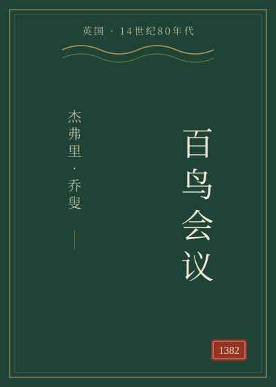
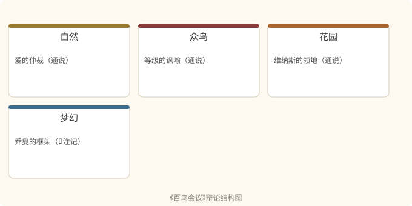

百鸟会议
一、基本信息
| 作者 | 乔叟 |
|---|---|
| 成书/出版 | 作者页注记：Britannica 列举（梦幻诗——公爵夫人之书、百鸟会议、名誉之宫——年份通说待核） Geoffrey Chaucer — Encyclopaedia Britannica（百科全书） |
| 国别/地区 | 英国 |
| 时代 | 古代 · 14世纪80年代 |
| 体裁 | 梦幻诗 |
| 语言 | 英语（中古英语） |

《百鸟会议》辩论结构图（主题·结构图）
二、创作背景
作者页注记：公爵夫人之书、百鸟会议、名誉之宫——'梦幻诗（Britannica 列举）'。
Britannica：乔叟——'英国诗歌之父'（作者页语境——待核）。
题材（通说待核）：情人节的自然主持百鸟择偶辩论——西塞罗《西庇阿之梦》框架。
三、内容脉络
（通说待核）'我'梦入维纳斯花园：众鸟辩论求爱。
（通说待核）'自然'女神的仲裁与三音步回旋曲结尾。
四、主要人物表
| 人物 | 身份 | 说明 |
|---|---|---|
| 自然 | 仲裁者 | （通说待核） |
| 众鸟 | 辩论者 | （通说待核） |
五、主题与艺术特点
- 爱与理性的辩论（通说待核）。
- 梦幻诗框架（B注记：梦幻诗序列）。
- 鸟类讽喻人类等级（通说待核）。
六、影响与评论
- Britannica：梦幻诗序列（作者页注记）。
Geoffrey Chaucer — Encyclopaedia Britannica（百科全书） - Britannica：《坎特伯雷故事》为代表作（作者页交叉）。
Geoffrey Chaucer — Encyclopaedia Britannica（百科全书）
七、阅读建议
难点
- 梦幻诗的框架结构。
- 鸟类的社会隐喻。
- 《百鸟会议》中译名（《众鸟之会》两说——通说待核）。
- 中古英语原版（公有领域）。
乔叟梦幻诗首选；与《特洛伊罗斯》对读。
八、待核实
- 成诗年份（约1382说）待核。
- 篇名写法核对。
- '西庇阿之梦'框架细节待核。
本页主要来源
相关作品：特洛伊罗斯与克丽西达雷雨
乔叟的其他收录作品：坎特伯雷故事特洛伊罗斯与克丽西达百鸟会议